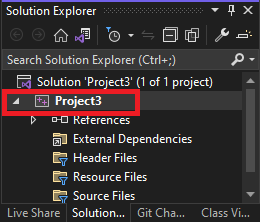
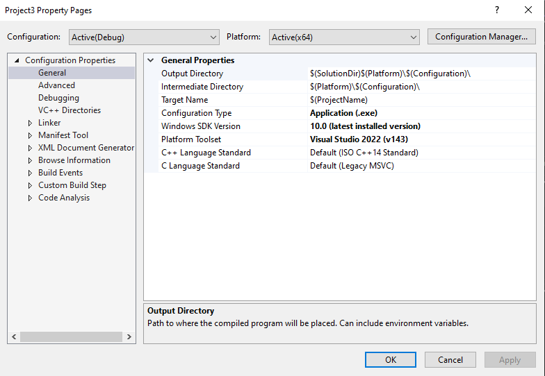

Visual Studio 2022 Setup
Prerequisites
-
Installed Visual Studios 2022 Community Edition. If you haven't, here are the steps to set it up:
- Click here to download the Visual Studios 2022 installer.
- Double-click on the installer that you downloaded.
- Under the [Desktop and Mobile] section, check the box for [Desktop development with C++].
- Click the on [Install/Modify] button.
-
Downloaded the
CProcessing.zipzip file from the Moodle linkCProcessing Library. - Downloaded the following files used to run the initial code
{kind=link}
Project Creation
First, we will create the Visual Studios Solution and Project files that will be used to run our first application.
- Open Visual Studios. You should see a window that looks like this:
- Under the [Visual Studio 2022] window:
- Click on [Create a new project]
- Under the [Create a new project] window:
- Click on [Empty Project]. Make sure that it's the C++ version.
- Click on [Next].
- Under the [Configure your new project] page:
- (Optional) Change the [Project Name] to one of your liking.
- (Optional) Change the [Location].
- Note the [Location] as we need to navigate to it later.
- Click on [Create].
You should see Visual Studios appear on your screen, like so:
This means that it has successfully created and opened.
In this project, we will not be building for 32-bit systems, so to avoid confusion, we need to remove 32-bit system-related configurations from the project.
- Under [Build] > [Configuration Manager]
- Click on [Active Solution Platform] > [Edit…] > Click on [x86] > [Remove]
- Click on [Platform] > [Edit…] > Click on [Win32] > [Remove]
Adding a folder for CProcessing and assets
Next, we will add the CProcessing library to a location within the project folder. This is so that our project can easily locate CProcessing's header and library files, and subsequently use its code.
- Go to the project's Solution File (.sln) using Windows Explorer. It should be at the [Location] that you set earlier.
- Create a folder named "Extern" at that location. Extern is short for "External" which means that this folder will contain code that is provided by someone else.
- Copy the CProcessing folder from the given
CProcessing.zipfile into the "Extern" folder.
- Copy the CProcessing folder from the given
- Create a folder named "Assets" at that location.
- Copy the given
DigiPen_Singapore_WEB_RED.pngfile into the "Assets" folder you just created
- Copy the given
Project Configuration
Next, we configure the project properties. Right-click on the project in the Solution Explorer:

Then click on [Properties]. It should open a window that looks something like this:

This window contains all configurations of the project.
IMPORTANT: From here on, unless stated otherwise, all the settings we will make will affect both Debug and Release configurations, so make sure to set [Configurations] to All Configurations.
Add the additional directories the compiler needs to look for when compiling and linking:
- Under [Configuration Properties] > [VC++ Directories]
- Add
$(SolutionDir)Extern\CProcessing\incto [General] > [Include Directories] - Add
$(SolutionDir)Extern\CProcessing\lib\x64to [General] > [Library Directories]
- Add
WARNING: When you add an entry into a section, you have to seperate each entry with ';'.
For example, if the entry for [Include Directories] is: $(VC_IncludePath);$(WindowsSDK_IncludePath), to add $(SolutionDir)Extern\CProcessing\inc, you will have to do: $(VC_IncludePath);$(WindowsSDK_IncludePath);$(SolutionDir)Extern\CProcessing\inc
Configure the linker to link to the appropriate CProcessing library files depending on whether we are on Debug or Release configurations:
- Under [Configuration Properties] > [Linker] > [Input] > [Additional Dependencies]
- With [Configuration] set to Debug, add
CProcessingd.lib - With [Configuration] set to Release, add
CProcessing.lib
- With [Configuration] set to Debug, add
Configure the character set the project is using:
- Under [Configuration Properties] > [Advanced] > [Character Set]
- Set to Use Multibyte Set
Configure the subsystem the project is using:
- Under [Configuration Properties] > [Linker] > [System] > [Subsystem]
- Set to Windows (/SUBSYSTEM:WINDOWS)
Set the output directory of the compiler where the executable will be created. We will set this to a folder named bin at the directory the Solution file is in:
- Under [Configuration Properties] > [General] > [Output Directory]
- Set to
$(SolutionDir)bin\$(Configuration)-$(Platform)\
- Set to
Set the intermediate directory of the compiler.
This is where all the 'rubbish' files that the compiler generates will go to.
We will set this to a folder named ".tmp" at the directory the Solution file is in:
- Under [Configuration Properties] > [General] > [Intermediate Directory]
- Set to
$(SolutionDir).tmp\$(Configuration)-$(Platform)\
- Set to
Set the working directory of the debugger to be in the same directory as the executables output by the compiler:
- Under [Configuration Properties] > [Debugging] > [Working Directory]
- Set to
$(SolutionDir)bin\$(Configuration)-$(Platform)\
- Set to
Configure the entry point to comply with CProcessing's entry point:
- Under [Configuration Properties] > [Linker] > [Advanced] > [Entry Point]
- Set to
mainCRTStartup
- Set to
Tell Visual Studios to copy the appropriate .dll and assets to where the executable is after it's done building:
- With [Configuration] set to Debug:
- Go to [Configuration Properties] -> [Build Events] > [Post-Build Event] > [Command Line] > Click on the [v] icon at the end of the [Command Line] entry area > [Edit...] and add the following lines in the popup window:
xcopy "$(SolutionDir)Assets\*" "$(OutDir)Assets\" /s /r /y /qxcopy "$(SolutionDir)Extern\CProcessing\lib\x64\CProcessingd.dll" "$(OutDir)" /s /r /y /qxcopy "$(SolutionDir)Extern\CProcessing\lib\x64\fmodL.dll" "$(OutDir)" /s /r /y /q
- Go to [Configuration Properties] -> [Build Events] > [Post-Build Event] > [Command Line] > Click on the [v] icon at the end of the [Command Line] entry area > [Edit...] and add the following lines in the popup window:
- With [Configuration] set to Release, add the following lines:
- Go to [Configuration Properties] -> [Build Events] > [Post-Build Event] > [Command Line] > Click on the [v] icon at the end of the [Command Line] entry area > [Edit...] and add the following lines in the popup window:
xcopy "$(SolutionDir)Assets\*" "$(OutDir)Assets\" /s /r /y /qxcopy "$(SolutionDir)Extern\CProcessing\lib\x64\CProcessing.dll" "$(OutDir)" /s /r /y /qxcopy "$(SolutionDir)Extern\CProcessing\lib\x64\fmod.dll" "$(OutDir)" /s /r /y /q
- Go to [Configuration Properties] -> [Build Events] > [Post-Build Event] > [Command Line] > Click on the [v] icon at the end of the [Command Line] entry area > [Edit...] and add the following lines in the popup window:
Running our first application
Create a fresh CPP file with the entry point function and name it "main.c"
- [Project] > [Add New Item..] > [C++ File]
- Copy the code from the given "main.c" into the "main.c" file that you just created.
- Build and run the project
- You should see a window pop up with the singapore DigiPen logo.
If you got here, congratulations! You have set up CProcessing!